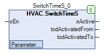

SwitchTimeS (FB)¶
FUNCTION_BLOCK SwitchTimeS
Short Description¶
Timer with 5 adjustable time periods and binary outputEach time period is defined by a switch-on/ switch-off time and a date
Portrayal¶

Interfaces¶
Inputs¶
Name Datatype
Range
Init-Value
Function
xEn BOOL Enable input
Outputs¶
Name Datatype
Range
Init-Value
Function
xActive BOOL Active time periods
todActivatedFrom TOD Switch-on time of the last active time period for the current day
todActivatedTo TOD Switch off time of the last active time period for the current day
Setpoints / Parameters¶
Name Datatype
Range
Init-Value
Function
datCH1_Date DATE DATE#2017-01-01 Date of the Time period 1
todCH1_TimeFrom TOD TOD#07:00 Switch-on time of the time period 1
todCH1_TimeTo TOD TOD#12:00 Switch-off time of the time period 1
xCH1_Mode BOOL TRUE Mode of display for time period 1
sCH1_Notice STRING ‘Custom note - click to change.’
Text for time period 1
datCH2_Date DATE DATE#2017-01-01 Date of the time period 2
todCH2_TimeFrom TOD TOD#07:00 Switch-on time of the time period 2
todCH2_TimeTo TOD TOD#12:00 Switch-off time of the time period 2
xCH2_Mode BOOL TRUE Mode of display for time period 2
sCH2_Notice STRING ‘Custom note - click to change.’
Text for time period 2
datCH3_Date DATE DATE#2017-01-01 Date of the time period 3
todCH3_TimeFrom TOD TOD#07:00 Switch-on time of the time period 3
todCH3_TimeTo TOD TOD#12:00 Switch-off time of the time period 3
xCH3_Mode BOOL TRUE Mode of display for the time period 3
sCH3_Notice STRING ‘Custom note - click to change.’
Text for time period 3
datCH4_Date DATE DATE#2017-01-01 Date of the time period 4
todCH4_TimeFrom TOD TOD#07:00 Switch-on time of the time period 4
todCH4_TimeTo TOD TOD#12:00 Switch-off time of the time period 4
xCH4_Mode BOOL TRUE Mode of display for the time period 4
sCH4_Notice STRING ‘Custom note - click to change.’
Text for time period 4
datCH5_Date DATE DATE#2017-01-01 Date of the time period 5
todCH5_TimeFrom TOD TOD#07:00 Switch-on time of the time period 5
todCH5_TimeTo TOD TOD#12:00 Ausschaltzeitpunkt der Zeitperiode 5 xCH5_Mode BOOL TRUE Mode of display for the time period 5
sCH5_Notice STRING ‘Custom note - click to change.’
Text for the time period 5
Functional Description¶
General¶
Enabling input xEN¶
xEn xActive todActivatedFrom todActivatedTo Notes
FALSE FALSE unchanged
unchanged
FB deactivated
TRUE Status depending on the 5 time periods
Switch-on time of the last active time period for the current day
Switch off time of the last active time period for the current day
FB activated
Display output xActive¶
xActive xEn Time period 1
Time period 2
Time period 3
Time period 4
Time period 5
Notes
FALSE FALSE X X X X X FB deactivated
FALSE TRUE FALSE FALSE FALSE FALSE FALSE No time period is active
TRUE TRUE FALSE FALSE TRUE FALSE FALSE At least one time period active
Switch-on point in time of the last active time period of the todActivatedFrom the current day¶
Switch-off point in time of the last active time period of the todActivated from the current day¶
Time periods 1 - 5 (X = 1 ..5)¶
Visualization¶
Information¶
Element Authors
Date
Version Notes
Function
Adam Bartod 09.2016 1.0 Initial version
Programming
Adam Bartod 09.2016 1.0 Initial version
Test Jochen Reu 09.2017 1.0 Initial version
Documentation
Jochen Reu 10.2017 1.0 Initial version
Codesys¶
- InOut:
Scope Name Type Initial Comment Input xEn BOOL Enable input
datCH1_Date DATE DATE#2017-1-1 Date of the Time period 1
todCH1_TimeFrom TOD TIME_OF_DAY#7:0 Switch-on time of the time period 1
todCH1_TimeTo TOD TIME_OF_DAY#12:0 Switch-off time of the time period 1
xCH1_Mode BOOL TRUE Mode of display for time period 1
sCH1_Notice STRING ‘Custom note - click to change.’
datCH2_Date DATE DATE#2017-1-1 Date of the time period 2
todCH2_TimeFrom TOD TIME_OF_DAY#7:0 Switch-on time of the time period 2
todCH2_TimeTo TOD TIME_OF_DAY#12:0 Switch-off time of the time period 2
xCH2_Mode BOOL TRUE Mode of display for time period 2
sCH2_Notice STRING ‘Custom note - click to change.’
datCH3_Date DATE DATE#2017-1-1 Date of the time period 3
todCH3_TimeFrom TOD TIME_OF_DAY#7:0 Switch-on time of the time period 3
todCH3_TimeTo TOD TIME_OF_DAY#12:0 Switch-off time of the time period 3
xCH3_Mode BOOL TRUE Mode of display for the time period 3
sCH3_Notice STRING ‘Custom note - click to change.’
datCH4_Date DATE DATE#2017-1-1 Date of the time period 4
todCH4_TimeFrom TOD TIME_OF_DAY#7:0 Switch-on time of the time period 4
todCH4_TimeTo TOD TIME_OF_DAY#12:0 Switch-off time of the time period 4
xCH4_Mode BOOL TRUE Mode of display for the time period 4
sCH4_Notice STRING ‘Custom note - click to change.’
datCH5_Date DATE DATE#2017-1-1 Date of the time period 5
todCH5_TimeFrom TOD TIME_OF_DAY#7:0 Switch-on time of the time period 5
todCH5_TimeTo TOD TIME_OF_DAY#12:0 Ausschaltzeitpunkt der Zeitperiode 5 xCH5_Mode BOOL TRUE Mode of display for the time period 5
sCH5_Notice STRING ‘Custom note - click to change.’
Output xActive BOOL Active time periods
todActivatedFrom TOD Switch-on time of the last active time period for the current day
todActivatedTo TOD Switch off time of the last active time period for the current day